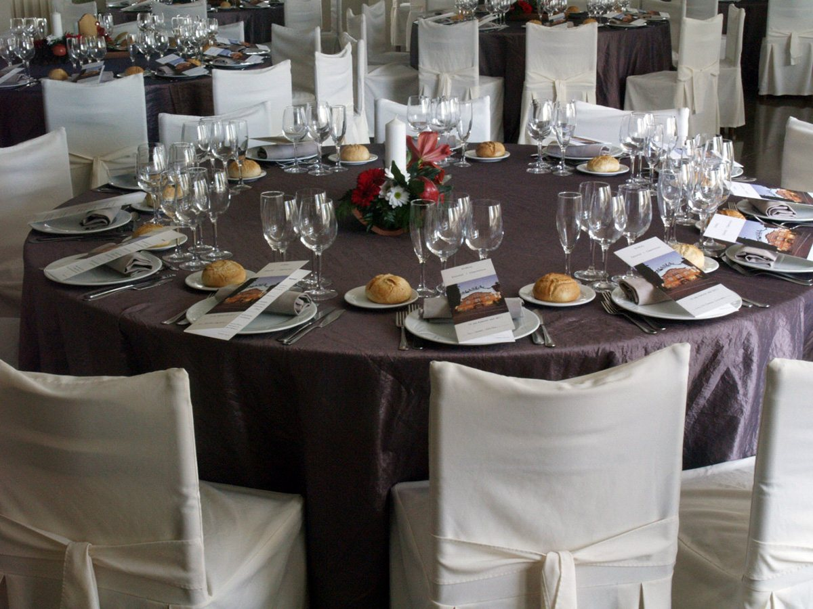
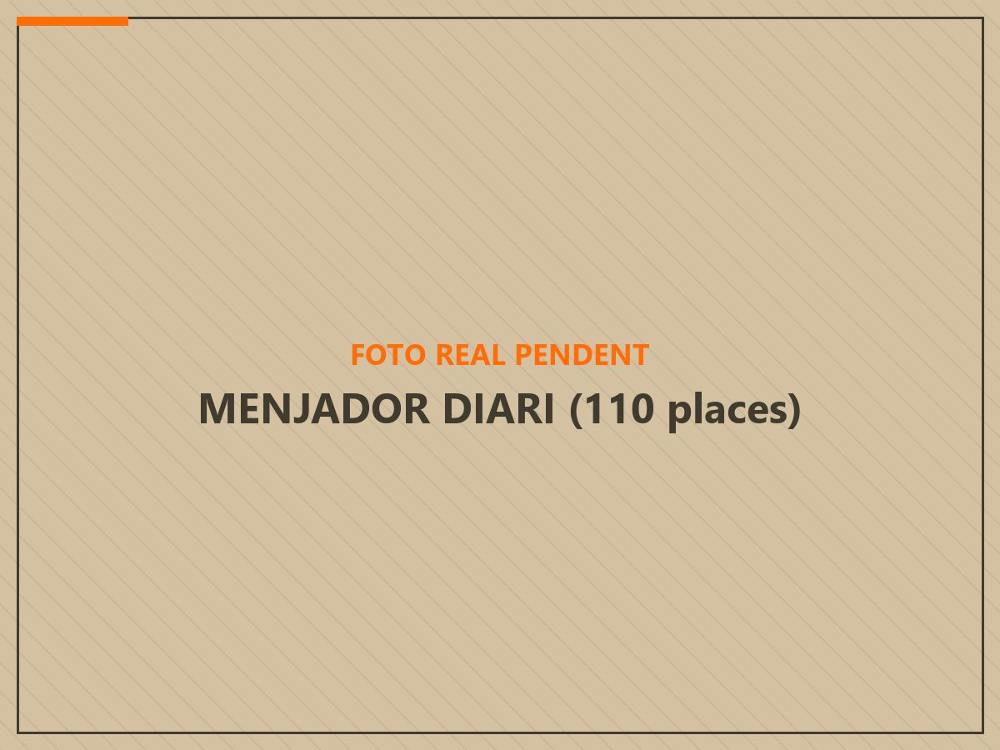
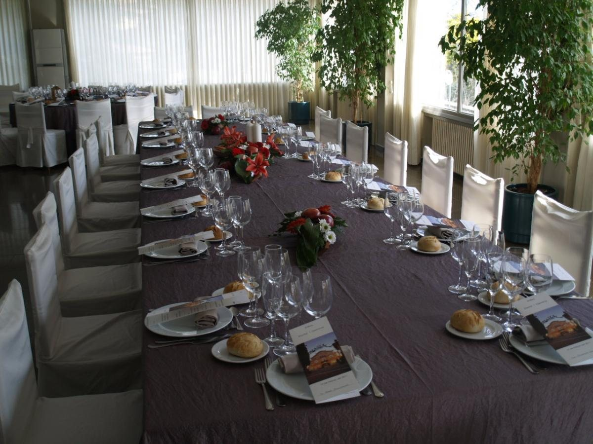
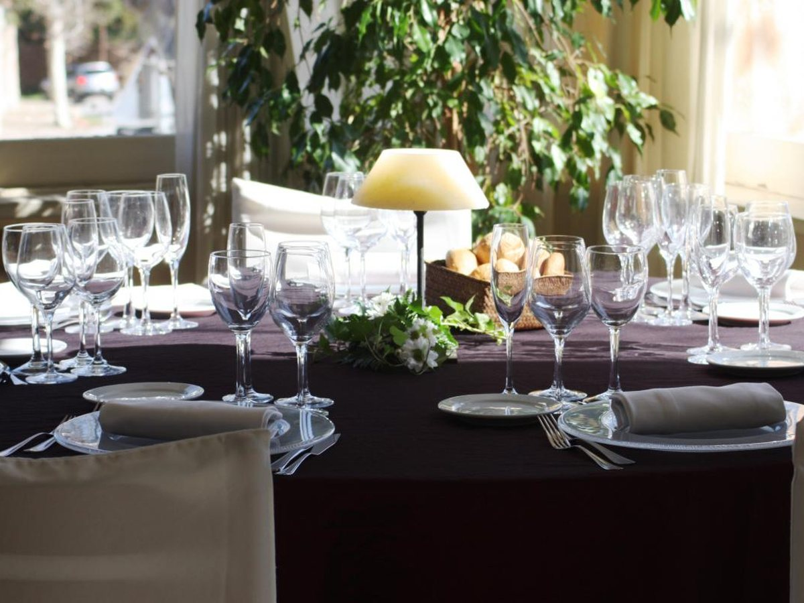

Saló Nou
Fins a 200 persones
El més gran de la casa. Per a comunions i per als dies que hi ve mig poble.

Inici · Celebracions
Comunions, bateigs, aniversaris de noces i dinars d'empresa. Quatre salons de capacitats diferents, a l'entrada de l'Ametlla del Vallès.
Moveu el comptador i us diem quin dels nostres salons us encaixa. Sense trucar ni esperar resposta.
60comensals
10200
Moveu el comptador per veure quins salons us encaixen.
Ompliu-ho i us truquem. Si ho preferiu, truqueu-nos vosaltres al 938 43 00 02 — de dilluns a dissabte de 9:00 a 00:00 i diumenge de 9:00 a 18:00.
Us truquem nosaltres al número que ens heu deixat. Si teniu pressa, truqueu-nos al 938 43 00 02.

Fins a 200 persones
El més gran de la casa. Per a comunions i per als dies que hi ve mig poble.

Fins a 110 persones
El menjador de sempre, el que trobareu obert qualsevol dia de la setmana.

Fins a 100 persones
Per a celebracions mitjanes que volen sala pròpia sense ser massa grans.

Màxim 20 persones
El reservat. Per a dinars d'empresa, sopars de família i taules tancades.
No tenim tres menús tancats en una llista. Ens expliqueu quants sereu, quin dia i què us imagineu, i us preparem una proposta amb preu. Si voleu, veniu a veure els salons abans de decidir res.